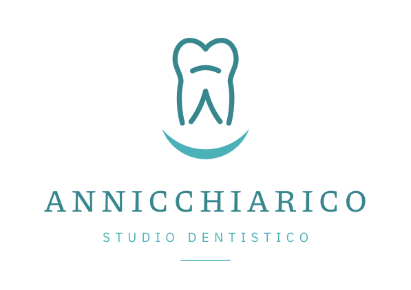
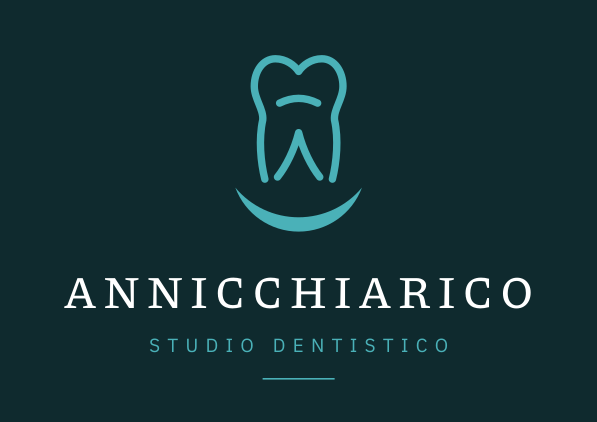
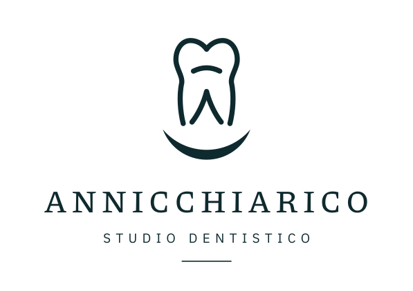
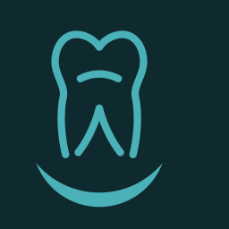
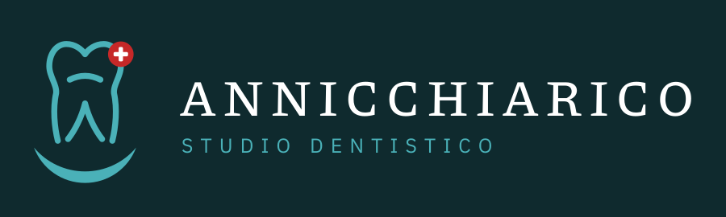

Logo definitivo
Dente a linea che legge come A (radici = gambe, archetto = traversa). Sorriso sotto: C ruotata, completata a mezzaluna. Colori del marchio in uso: teal scuro #38878E, teal chiaro #4AB1B8.
Verticale (impaginazione del riferimento)



Orizzontale e marchio

Una riga e dimensioni piccole
Variante con i colori del file originale (#39A495, #54EBBB)
Insegna, con dettaglio rosso
Croce bianca su fondo rosso (#C62828), mai croce rossa su bianco che è emblema protetto. Badge a destra oppure disco sul dente.
